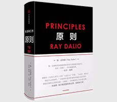

原则

| 作者: [美] 瑞·达利欧 著 | 开本: 32开 |
| 出版社: 中信出版社 | 纸张: 纯质纸 |
| 出版时间: 2018-01 | 页数: 576页 |
| 版次: 1 | 字数: 532千字 |
| ISBN: 9787508684031 | 定价: 98.00 |
| 分类: 管理 | 装帧: 精装 |
内容简介:
瑞·达利欧是世界投资家、企业家之一，对冲基金公司桥水创始人。桥水创立至今为客户赚取的收益远远超过历史上任何一家对冲基金。达利欧认为桥水的成功源自他所奉行的一套原则，而这些原则也是他一生中学到的最重要的东西。达利欧认为，我们可以像看待机器一样看待生活、管理、经商和投资，并将其系统化为一系列原则。这本书阐述了他的原则的两大基石——极度求真、极度透明，并介绍了以此为基础的创意择优，以及基于可信度评价的决策机制。书中500多条原则将帮助我们保持开放心态，看清现实，正确评价自己和他人，从容面对做决策、打造强大团队等问题，更进一步深入认识自我，实现不断成长。达利欧相信，自己的成功并非因为个人的特质，而是因为他从失败中学会了做人、做事的原则，而大多数人和公司都可以运用他的这些原则更好地实现自己的目标。
作者简介:
瑞达利欧对冲基金公司桥水创始人。他出生于纽约长岛一个非常普通的中产阶级家庭，26岁时在自己的两居室公寓内创办了桥水。经过42年的发展，桥水位列美国*重要的私营公司榜单第五位（《财富》杂志）。他入选《时代周刊》世界100位*具影响力人物，并跻身《福布斯》世界前100名富豪行列。由于他独到的投资准则改变了基金业，美国CIO经理人杂志称其为“投资界的史蒂夫乔布斯”。
Copyright © 2018-2020 徐悦佳. All rights reserved.